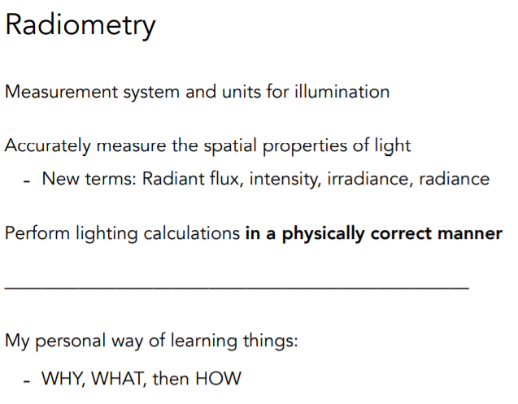

L14~16 Ray Tracing (2)
BRDF、渲染方程、全局光照、路径追踪
0 引入——辐射度量学概述
在之前讲Blinn-Phong着色模型时，会设置一个数当做光照强度，但是这个数真实的物理意义我们并不甚清楚。辐射度量学给出了一系列度量方法和单位去定义光照，它定义了光照在空间中的属性，这在物理上是完全正确的。
1 相关概念
1.1 Radiant Energy and Flux (Power)
Radiant energy：辐射能量，单位焦耳J。Radiant Flux(Power)：单位时间内辐射出的能量，可以表示光的亮度。


1.2 Radiant Intensity
Radiant Intensity：在单位时间内，往每个立体角（Solid Angle）上辐射出的能量。
1.3 Irradiance
Irradiance 定义：在单位时间内，每个单位面积上接受到的光照的能量，即 power per unit area。

1.4 Radiance
Radiance是描述环境中光的分布的基本场量。定义：某个单位面，往某个单位立体角方向上的发出的能量。


2 双向反射分布函数（BRDF）
BRDF定义了如何把表面上收集到的能量以某种比例放射到其他的方向上去。它描述了物体和光线之间的相互作用，正是由于BRDF的这种概念，决定了物体不同的材质到底是怎么一回事。


3 反射方程→渲染方程
渲染效果 = 反射光 + 自身发光。渲染方程如下（注意我们默认所有方向都是朝外的）：


4 全局光照 Global Illumination
把光线弹射的次数的项都加起来，也就是得到了全局光照。光栅化做的只有自发光以及直接光照。


5 概率论回顾
离散型随机变量及其分布、期望、连续型随机变量的概率密度函数（PDF）与期望等基础知识。
6 蒙特卡洛积分
蒙特卡洛积分是渲染方程的实现基础，通过随机采样来近似求解积分。